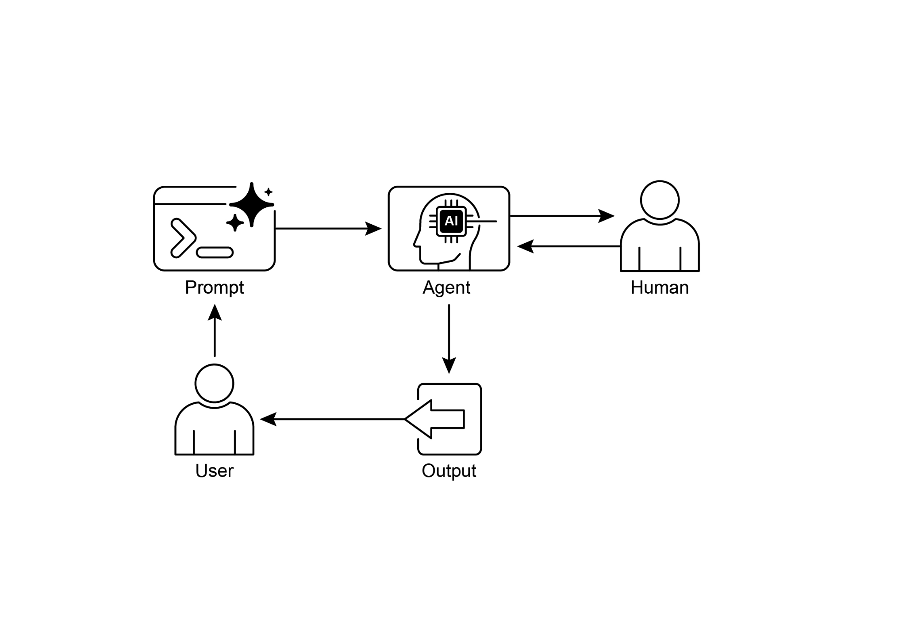

读书 · Agentic Design Patterns · 中英对照
第 13 章 · 人在回路 Human-in-the-Loop
Chapter 13: Human-in-the-Loop · 《Agentic Design Patterns》 · Antonio Gulli · 2025
讲如何把人类判断、监督与反馈嵌入智能体工作流，以应对高风险与模糊场景。
← 返回导读 原书 PDF · 第202页起 上一章:第12章 下一章:第14章
本章要点
① HITL将人类判断与AI算力结合，而非用AI取代人 ① 核心机制：监督、干预纠错、反馈学习、决策增强、升级策略 ① 主要局限是可扩展性差、依赖专家、隐私与匿名化成本 ① Human-on-the-loop：人定策略，AI实时执行合规动作
本章一图流
人机协同人类判断结合AI算力→核心机制监督、纠错、反馈、增强、升级→主要局限扩展差、依赖专家、隐私成本→人在环上人定策略，AI实时执行→嵌入工作流应对高风险与模糊场景
HITL将人类判断与反馈嵌入智能体工作流，以人机协同应对高风险场景。
原书插图

本章划线句
划线句(逐字校验)
"The HITL approach fundamentally revolves around the idea of synergy between artificial and human intelligence."
为什么值得划线:点明HITL本质是人机协同而非替代。
划线句(逐字校验)
"Despite its benefits, the HITL pattern has significant caveats, chief among them being a lack of scalability."
为什么值得划线:诚实指出该模式最大代价，避免盲目套用。
划线句(逐字校验)
"Escalation Policies are established protocols that dictate when and how an agent should escalate tasks to human operators"
为什么值得划线:升级策略是HITL落地的关键工程机制。
正文(英中对照)
第13章：人在回路（Human-in-the-Loop） Chapter 13: Human-in-the-Loop
"The Human-in-the-Loop (HITL) pattern represents a pivotal strategy in the development and deployment of Agents. It deliberately interweaves the unique strengths of human cognition—such as judgment, creativity, and nuanced understanding—with the computational power and efficiency of AI. This strategic integration is not merely an option but often a necessity, especially as AI systems become increasingly embedded in critical decision-making processes. The core principle of HITL is to ensure that AI operates within ethical boundaries, adheres to safety protocols, and achieves its objectives with optimal effectiveness."
Human-in-the-Loop（HITL，人在回路）模式是 Agent 开发与部署中的关键策略。它有意将人类认知的独特优势——如判断力、创造力和细致入微的理解——与 AI 的计算能力和效率交织在一起。这种策略性整合不仅是一种选择，而且往往是必需的，尤其是当 AI 系统日益嵌入关键决策过程时。HITL 的核心原则是确保 AI 在伦理边界内运行、遵守安全协议，并以最佳效能实现其目标。
导读注:点明 HITL 是 Agent 部署的关键策略，强调人类判断与 AI 效率的策略性整合。
"These concerns are particularly acute in domains characterized by complexity, ambiguity, or significant risk, where the implications of AI errors or misinterpretations can be substantial. In such scenarios, full autonomy—where AI systems function independently without any human intervention—may prove to be imprudent. HITL acknowledges this reality and emphasizes that even with rapidly advancing AI technologies, human oversight, strategic input, and collaborative interactions remain indispensable. The HITL approach fundamentally revolves around the idea of synergy between artificial and human intelligence. Rather than viewing AI as a replacement for human workers, HITL positions AI as a tool that augments and enhances human capabilities."
这些担忧在具有复杂性、模糊性或重大风险的领域中尤为突出，在这些领域中，AI 错误或误解的影响可能非常重大。在此类场景下，完全自主——即 AI 系统在没有任何人工干预的情况下独立运行——可能并不明智。HITL（Human-in-the-Loop，人在回路）承认这一现实，并强调即使 AI 技术快速发展，人类监督、战略性输入和协作互动仍然不可或缺。HITL 方法从根本上围绕人工智能与人类智能之间的协同这一理念展开。HITL 不将 AI 视为人类工作者的替代品，而是将 AI 定位为增强和提升人类能力的工具。
导读注:强调高风险场景下完全自主不明智，人在回路是必要协同。
"This augmentation can take various forms, from automating routine tasks to providing data-driven insights that inform human decisions. The end goal is to create a collaborative ecosystem where both humans and AI Agents can leverage their distinct strengths to achieve outcomes that neither could accomplish alone. In practice, HITL can be implemented in diverse ways. One common approach involves humans acting as validators or reviewers, examining AI outputs to ensure accuracy and identify potential errors. Another implementation involves humans actively guiding AI behavior, providing feedback or making corrections in real-time."
这种增强可以采取多种形式，从自动化常规任务到提供数据驱动的洞察以辅助人类决策。最终目标是创建一个协作生态系统，使人类和 AI Agent 都能发挥各自独特的优势，实现任何一方单独都无法达成的成果。在实践中，HITL（Human-in-the-Loop，人在回路）可以通过多种方式实施。一种常见方法是让人类充当验证者或审核者，检查 AI 输出以确保准确性并识别潜在错误。另一种实施方式是人类主动引导 AI 行为，实时提供反馈或进行纠正。
导读注:点出 HITL 的核心：人机协作互补，而非简单替代。
"In more complex setups, humans may collaborate with AI as partners, jointly solving problems or making decisions through interactive dialog or shared interfaces. Regardless of the specific implementation, the HITL pattern underscores the importance of maintaining human control and oversight, ensuring that AI systems remain aligned with human ethics, values, goals, and societal expectations. 1 Human-in-the-Loop Pattern Overview The Human-in-the-Loop (HITL) pattern integrates artificial intelligence with human input to enhance Agent capabilities."
在更复杂的设置中，人类可能作为合作伙伴与 AI 协作，通过交互式对话或共享界面共同解决问题或做出决策。无论具体实现方式如何，HITL 模式都强调了保持人类控制与监督的重要性，确保 AI 系统始终与人类伦理、价值观、目标和社会期望保持一致。1 人在回路模式概述 人在回路（Human-in-the-Loop，HITL）模式将人工智能与人类输入相结合，以增强 Agent 能力。
导读注:点出 HITL 的核心：人类控制与监督不可缺，AI 须对齐人类价值。
"This approach acknowledges that optimal AI performance frequently requires a combination of automated processing and human insight, especially in scenarios with high complexity or ethical considerations. Rather than replacing human input, HITL aims to augment human abilities by ensuring that critical judgments and decisions are informed by human understanding. HITL encompasses several key aspects: Human Oversight, which involves monitoring AI agent performance and output (e.g., via log reviews or real-time dashboards) to ensure adherence to guidelines and prevent undesirable outcomes."
这种方法承认，最优的 AI 性能往往需要自动化处理与人类洞察的结合，尤其是在高复杂度或涉及伦理考量的场景中。HITL（Human-in-the-Loop，人机回环）并非取代人类输入，而是通过确保关键判断与决策建立在人类理解之上来增强人类能力。HITL 包含几个关键方面：人类监督（Human Oversight），即监控 AI agent 的性能与输出（例如通过日志审查或实时仪表盘），以确保其遵循准则并防止不良结果。
导读注:点明 HITL 的核心是增强而非取代人类，并给出人类监督的落地方式。
"Intervention and Correction occurs when an AI agent encounters errors or ambiguous scenarios and may request human intervention; human operators can rectify errors, supply missing data, or guide the agent, which also informs future agent improvements. Human Feedback for Learning is collected and used to refine AI models, prominently in methodologies like reinforcement learning with human feedback, where human preferences directly influence the agent's learning trajectory. Decision Augmentation is where an AI agent provides analyses and recommendations to a human, who then makes the final decision, enhancing human decision-making through AI-generated insights rather than full autonomy."
当 AI agent（智能体）遇到错误或模糊场景时，会发生干预与纠正（Intervention and Correction），它可能请求人工干预；人工操作员可以纠正错误、补充缺失数据或引导智能体，这也会为未来的智能体改进提供信息。用于学习的人类反馈（Human Feedback for Learning）会被收集并用于改进 AI 模型，尤其在基于人类反馈的强化学习等方法中尤为突出，其中人类偏好会直接影响智能体的学习轨迹。决策增强（Decision Augmentation）是指 AI agent 向人类提供分析与建议，由人类做出最终决策，通过 AI 生成的洞察而非完全自主来增强人类决策。
导读注:三种人机协作模式：干预纠错、反馈学习、决策增强，核心是 AI 辅助而非替代人。
"Human-Agent Collaboration is a cooperative interaction where humans and AI agents contribute their respective strengths; routine data processing may be handled by the agent, while creative problem-solving or complex negotiations are managed by the human. Finally, Escalation Policies are established protocols that dictate when and how an agent should escalate tasks to human operators, preventing errors in situations beyond the agent's capability. Implementing HITL patterns enables the use of Agents in sensitive sectors where full autonomy is not feasible or permitted. It also provides a mechanism for ongoing improvement through feedback loops."
Human-Agent Collaboration（人机协作）是一种合作性互动，人类与 AI agent 各自贡献其优势；常规数据处理可由 agent 处理，而创造性问题解决或复杂谈判则由人类负责。最后，Escalation Policies（升级策略）是既定协议，规定 agent 应在何时以及如何将任务升级给人类操作员，从而防止在超出 agent 能力的情况下发生错误。实施 HITL 模式使得 agent 能够应用于无法或不被允许完全自主的敏感领域。它还通过反馈循环提供了一种持续改进的机制。
导读注:点出人机分工与升级策略，强调 HITL 让 agent 可用于敏感领域。
"For example, in finance, the final approval of a large corporate loan requires a human loan officer to assess qualitative factors like leadership character. Similarly, in the legal field, core principles of justice and accountability demand that a human judge retain final authority over critical decisions like sentencing, which involve complex moral reasoning. Caveats: Despite its benefits, the HITL pattern has significant caveats, chief among them being a lack of scalability. While human oversight provides high accuracy, operators cannot manage millions of tasks, creating a fundamental trade-off that often requires a hybrid approach combining automation for scale and HITL for 2 accuracy."
例如，在金融领域，大型企业贷款的最终审批需要人类信贷员评估领导品格等定性因素。同样，在法律领域，正义与问责的核心原则要求人类法官对量刑等关键决策保留最终权威，因为这些决策涉及复杂的道德推理。注意事项：尽管 HITL（Human-in-the-Loop，人在回路）模式有诸多益处，但它也存在显著局限，其中最主要的是缺乏可扩展性。虽然人类监督能提供高准确率，但操作人员无法管理数百万项任务，这就形成了一种根本性的权衡，往往需要采用混合方法，即以自动化实现规模扩展，以 HITL 保障准确率。
导读注:点出 HITL 的核心矛盾：准确率与可扩展性难以兼得，故需混合方案。
"Furthermore, the effectiveness of this pattern is heavily dependent on the expertise of the human operators; for example, while an AI can generate software code, only a skilled developer can accurately identify subtle errors and provide the correct guidance to fix them. This need for expertise also applies when using HITL to generate training data, as human annotators may require special training to learn how to correct an AI in a way that produces high-quality data. Lastly, implementing HITL raises significant privacy concerns, as sensitive information must often be rigorously anonymized before it can be exposed to a human operator, adding another layer of process complexity."
此外，这种模式的有效性在很大程度上取决于人类操作者的专业知识；例如，虽然 AI 可以生成软件代码，但只有熟练的开发者才能准确识别细微错误并提供正确的修复指导。这种对专业知识的需求同样适用于使用 HITL（Human-in-the-Loop，人在回路）生成训练数据的情况，因为人类标注者可能需要接受特殊培训，学习如何以产生高质量数据的方式纠正 AI。最后，实施 HITL 会带来重大的隐私问题，因为敏感信息通常必须在暴露给人类操作者之前进行严格的匿名化处理，这又增加了一层流程复杂性。
导读注:HITL 并非万能：依赖专家、需培训标注者、隐私匿名化三重成本不可忽视。
"Practical Applications & Use Cases The Human-in-the-Loop pattern is vital across a wide range of industries and applications, particularly where accuracy, safety, ethics, or nuanced understanding are paramount. ● Content Moderation: AI agents can rapidly filter vast amounts of online content for violations (e.g., hate speech, spam)."
实际应用与用例：Human-in-the-Loop（人在回路）模式在广泛的行业和应用中至关重要，尤其是在准确性、安全性、伦理或细致理解至关重要的场景。● 内容审核：AI agent 可以快速过滤大量在线内容以查找违规行为（例如仇恨言论、垃圾信息）。
导读注:点出人在回路模式在准确性、安全与伦理关键场景中的核心价值。
"However, ambiguous cases or borderline content are escalated to human moderators for review and final decision, ensuring nuanced judgment and adherence to complex policies. ● Autonomous Driving: While self-driving cars handle most driving tasks autonomously, they are designed to hand over control to a human driver in complex, unpredictable, or dangerous situations that the AI cannot confidently navigate (e.g., extreme weather, unusual road conditions). ● Financial Fraud Detection: AI systems can flag suspicious transactions based on patterns."
然而，模糊案例或边界内容会升级至人工审核员（human moderators）进行审查和最终决定，以确保细致判断并遵守复杂政策。● 自动驾驶（Autonomous Driving）：虽然自动驾驶汽车自主处理大多数驾驶任务，但它们被设计为在AI无法自信应对的复杂、不可预测或危险情况下（例如极端天气、异常道路状况）将控制权移交给人类驾驶员。● 金融欺诈检测（Financial Fraud Detection）：AI系统可以基于模式标记可疑交易。
导读注:强调人机协作：模糊案例与危险场景均需人类兜底。
"However, high-risk or ambiguous alerts are often sent to human analysts who investigate further, contact customers, and make the final determination on whether a transaction is fraudulent. ● Legal Document Review: AI can quickly scan and categorize thousands of legal documents to identify relevant clauses or evidence. Human legal professionals then review the AI's findings for accuracy, context, and legal implications, especially for critical cases. ● Customer Support (Complex Queries): A chatbot might handle routine customer inquiries."
然而，高风险或模糊的警报通常会被发送给人类分析师，由他们进一步调查、联系客户，并对交易是否属于欺诈做出最终判定。● 法律文件审查：AI 可以快速扫描并分类数千份法律文件，以识别相关条款或证据。随后，人类法律专业人员会审查 AI 的发现，以确保准确性、上下文和法律影响，尤其是对于关键案件。● 客户支持（复杂查询）：聊天机器人可能会处理常规的客户咨询。
导读注:人机协作模式：AI 初筛、人类终审，尤其在高风险与法律场景。
"If the user's problem is too complex, emotionally charged, or requires empathy that the AI cannot provide, the conversation is seamlessly handed over to a human support agent. ● Data Labeling and Annotation: AI models often require large datasets of labeled data for training. Humans are put in the loop to accurately label images, text, or 3 audio, providing the ground truth that the AI learns from."
如果用户的问题过于复杂、情绪化，或需要 AI 无法提供的共情，对话会无缝移交给人工支持坐席。● 数据标注与注释（Data Labeling and Annotation）：AI 模型通常需要大量带标签的数据集进行训练。人类被纳入循环（human in the loop）以准确标注图像、文本或音频，提供 AI 学习所依据的真实基准（ground truth）。
导读注:点出 human-in-the-loop 的两大用途：无缝转人工与提供训练所需的 ground truth。
"This is a continuous process as models evolve. ● Generative AI Refinement: When an LLM generates creative content (e.g., marketing copy, design ideas), human editors or designers review and refine the output, ensuring it meets brand guidelines, resonates with the target audience, and maintains quality. ● Autonomous Networks: AI systems are capable of analyzing alerts and forecasting network issues and traffic anomalies by leveraging key performance indicators (KPIs) and identified patterns. Nevertheless, crucial decisions—such as addressing high-risk alerts—are frequently escalated to human analysts. These analysts conduct further investigation and make the ultimate determination regarding the approval of network changes."
这是一个随着模型演进持续进行的过程。● 生成式 AI 精修（Generative AI Refinement）：当 LLM 生成创意内容（如营销文案、设计创意）时，由人工编辑或设计师审阅并精修输出，确保其符合品牌规范、引起目标受众共鸣并保持质量。● 自治网络（Autonomous Networks）：AI 系统能够利用关键绩效指标（KPI）和已识别的模式来分析告警并预测网络问题与流量异常。然而，关键决策——例如处理高风险告警——仍经常上报给人类分析师。这些分析师进行进一步调查，并就网络变更的批准做出最终决定。
导读注:强调 AI 虽能预测网络异常，高风险决策仍由人类把关。
"This pattern exemplifies a practical method for AI implementation. It harnesses AI for enhanced scalability and efficiency, while maintaining human oversight to ensure quality, safety, and ethical compliance. "Human-on-the-loop" is a variation of this pattern where human experts define the overarching policy, and the AI then handles immediate actions to ensure compliance. Let's consider two examples: ● Automated financial trading system: In this scenario, a human financial expert sets the overarching investment strategy and rules."
这一模式体现了 AI 实施的一种实用方法。它利用 AI 提升可扩展性和效率，同时保留人类监督以确保质量、安全与伦理合规。Human-on-the-loop（人在环上）是这一模式的一种变体：由人类专家制定总体政策，AI 随后处理即时行动以确保合规。让我们考虑两个例子：● 自动化金融交易系统：在此场景中，人类金融专家设定总体投资策略和规则。
导读注:核心是 Human-on-the-loop：人定政策、AI 执行，兼顾效率与合规。
"For instance, the human might define the policy as: "Maintain a portfolio of 70% tech stocks and 30% bonds, do not invest more than 5% in any single company, and automatically sell any stock that falls 10% below its purchase price." The AI then monitors the stock market in real-time, executing trades instantly when these predefined conditions are met. The AI is handling the immediate, high-speed actions based on the slower, more strategic policy set by the human operator. ● Modern call center: In this setup, a human manager establishes high-level policies for customer interactions."
例如，人类可能将策略定义为：“维持一个70%科技股和30%债券的投资组合，对任何单一公司的投资不超过5%，并自动卖出任何跌破购买价10%的股票。”随后，AI实时监控股市，在满足这些预定义条件时立即执行交易。AI根据人类操作者设定的更缓慢、更具战略性的策略来处理即时、高速的行动。● 现代呼叫中心：在这种设置中，人类管理者为客户互动制定高层策略。
导读注:展示人类定策略、AI执行的分工模式，策略与执行分离是核心。
"For instance, the manager might set rules such as "any call mentioning 'service outage' should be immediately routed to a technical support specialist," or "if a customer's tone of voice indicates high frustration, the system should offer to connect them directly to a human agent." The AI system then handles the initial customer interactions, listening to and interpreting their needs in real-time. It autonomously executes the manager's policies by instantly routing the calls or offering escalations without needing human intervention for each individual case. This allows the AI to manage the high 4 volume of immediate actions according to the slower, strategic guidance provided by the human operator."
例如，管理者可以设定规则，如“任何提及‘service outage’（服务中断）的通话都应立即转接给技术支持专员”，或“如果客户的语气表明其高度沮丧，系统应主动提出将其直接转接给人工坐席”。随后，AI 系统负责处理初始的客户交互，实时倾听并解读客户需求。它通过即时转接通话或主动提供升级选项来自主执行管理者的策略，无需对每个个案进行人工干预。这使得 AI 能够依据人类操作员提供的更缓慢、更具战略性的指导，来管理大量即时操作。
导读注:展示 AI 如何将管理者的策略规则转化为实时自主执行，实现战略与执行的分离。
"Hands-On Code Example To demonstrate the Human-in-the-Loop pattern, an ADK agent can identify scenarios requiring human review and initiate an escalation process . This allows for human intervention in situations where the agent's autonomous decision-making capabilities are limited or when complex judgments are required. This is not an isolated feature; other popular frameworks have adopted similar capabilities. LangChain, for instance, also provides tools to implement these types of interactions."
动手代码示例 为了演示 Human-in-the-Loop（人机回环）模式，ADK agent 可以识别需要人工审核的场景并启动升级流程。这允许在 agent 的自主决策能力有限或需要复杂判断的情况下进行人工干预。这不是一个孤立的功能；其他流行框架也采用了类似的能力。例如，LangChain 也提供了实现这类交互的工具。
导读注:展示 ADK 如何触发人工审核，并指出人机回环已是跨框架的通用能力。
python
from google.adk.agents import Agent
from google.adk.tools.tool_context import ToolContext
from google.adk.callbacks import CallbackContext
from google.adk.models.llm import LlmRequest
from google.genai import types
from typing import Optionalpython
# Placeholder for tools (replace with actual implementations if
needed)
def troubleshoot_issue(issue: str) -> dict:
return {"status": "success", "report": f"Troubleshooting steps for
{issue}."}python
def create_ticket(issue_type: str, details: str) -> dict:
return {"status": "success", "ticket_id": "TICKET123"}python
def escalate_to_human(issue_type: str) -> dict:
# This would typically transfer to a human queue in a real system
return {"status": "success", "message": f"Escalated {issue_type}
to a human specialist."}"technical_support_agent = Agent( name="technical_support_specialist", model="gemini-2.0-flash-exp", instruction=""" You are a technical support specialist for our electronics company. FIRST, check if the user has a support history in state["customer_info"]["support_history"]. If they do, reference this history in your responses. For technical issues: 1. Use the troubleshoot_issue tool to analyze the problem. 2. Guide the user through basic troubleshooting steps. 3. If the issue persists, use create_ticket to log the issue. 5 For complex issues beyond basic troubleshooting: 1. Use escalate_to_human to transfer to a human specialist. Maintain a professional but empathetic tone. Acknowledge the frustration technical issues can cause, while providing clear steps toward resolution. """, tools=[troubleshoot_issue, create_ticket, escalate_to_human] )"
technical_support_agent = Agent( name="technical_support_specialist", model="gemini-2.0-flash-exp", instruction=""" 您是我们电子公司的技术支持专员。首先，检查用户在 state["customer_info"]["support_history"] 中是否有支持历史。如果有，请在回复中引用此历史。对于技术问题：1. 使用 troubleshoot_issue 工具分析问题。2. 引导用户完成基本故障排除步骤。3. 如果问题仍然存在，使用 create_ticket 记录问题。5 对于超出基本故障排除的复杂问题：1. 使用 escalate_to_human 转接给人工专员。保持专业但富有同理心的语气。承认技术问题可能引起的挫败感，同时提供清晰的解决步骤。 """, tools=[troubleshoot_issue, create_ticket, escalate_to_human] )
导读注:注意支持历史检查和升级流程，确保专业与同理心。
python
def personalization_callback(
callback_context: CallbackContext, llm_request: LlmRequest
) -> Optional[LlmRequest]:
"""Adds personalization information to the LLM request."""
# Get customer info from state
customer_info = callback_context.state.get("customer_info")
if customer_info:
customer_name = customer_info.get("name", "valued customer")
customer_tier = customer_info.get("tier", "standard")
recent_purchases = customer_info.get("recent_purchases", [])python
personalization_note = (
f"\nIMPORTANT PERSONALIZATION:\n"
f"Customer Name: {customer_name}\n"
f"Customer Tier: {customer_tier}\n"
)
if recent_purchases:
personalization_note += f"Recent Purchases: {',
'.join(recent_purchases)}\n"python
if llm_request.contents:
# Add as a system message before the first content
system_content = types.Content(
role="system",
parts=[types.Part(text=personalization_note)]
)
llm_request.contents.insert(0, system_content)
return None # Return None to continue with the modified request"This code offers a blueprint for creating a technical support agent using Google's ADK, designed around a HITL framework. The agent acts as an intelligent first line of support, configured with specific instructions and equipped with tools like troubleshoot_issue, create_ticket, and escalate_to_human to manage a complete 6 support workflow. The escalation tool is a core part of the HITL design, ensuring complex or sensitive cases are passed to human specialists. A key feature of this architecture is its capacity for deep personalization, achieved through a dedicated callback function. Before contacting the LLM, this function dynamically retrieves customer-specific data—such as their name, tier, and purchase history—from the agent's state."
这段代码提供了一个使用 Google 的 ADK（Agent Development Kit）创建技术支持 agent 的蓝图，其设计围绕 HITL（Human-in-the-Loop，人在回路）框架展开。该 agent 充当智能的一线支持，配置有特定指令，并配备 troubleshoot_issue、create_ticket 和 escalate_to_human 等工具，以管理完整的 6 步支持工作流。升级工具是 HITL 设计的核心部分，确保复杂或敏感案例被转交给人类专家。该架构的一个关键特性是通过专用回调函数实现深度个性化。在联系 LLM 之前，该函数会从 agent 的状态中动态检索客户特定数据——例如姓名、层级和购买历史。
导读注:展示如何用 ADK 构建带 HITL 与深度个性化的技术支持 agent。
"This context is then injected into the prompt as a system message, enabling the agent to provide highly tailored and informed responses that reference the user's history. By combining a structured workflow with essential human oversight and dynamic personalization, this code serves as a practical example of how the ADK facilitates the development of sophisticated and robust AI support solutions. At Glance What: AI systems, including advanced LLMs, often struggle with tasks that require nuanced judgment, ethical reasoning, or a deep understanding of complex, ambiguous contexts. Deploying fully autonomous AI in high-stakes environments carries significant risks, as errors can lead to severe safety, financial, or ethical consequences."
随后，该上下文（context）作为系统消息（system message）被注入到 prompt 中，使智能体（agent）能够提供高度定制化且信息充分的回复，并引用用户的历史记录。通过将结构化工作流与必要的人工监督和动态个性化相结合，这段代码为 ADK 如何促进开发复杂且稳健的 AI 支持解决方案提供了一个实际示例。概览 是什么：包括先进 LLM 在内的 AI 系统，往往难以处理需要细致判断、伦理推理或对复杂、模糊语境有深入理解的任务。在高风险环境中部署完全自主的 AI 会带来重大风险，因为错误可能导致严重的安全、财务或伦理后果。
导读注:强调人工监督与动态个性化结合，并警示高风险场景下全自主 AI 的风险。
"These systems lack the inherent creativity and common-sense reasoning that humans possess. Consequently, relying solely on automation in critical decision-making processes is often imprudent and can undermine the system's overall effectiveness and trustworthiness. Why: The Human-in-the-Loop (HITL) pattern provides a standardized solution by strategically integrating human oversight into AI workflows. This agentic approach creates a symbiotic partnership where AI handles computational heavy-lifting and data processing, while humans provide critical validation, feedback, and intervention. By doing so, HITL ensures that AI actions align with human values and safety protocols."
这些系统缺乏人类所固有的创造力和常识推理能力。因此，在关键决策过程中仅依赖自动化往往是不明智的，并且可能削弱系统的整体有效性和可信度。原因：Human-in-the-Loop（HITL，人在回路）模式通过将人类监督策略性地整合到 AI 工作流中，提供了一种标准化解决方案。这种智能体式方法构建了一种共生伙伴关系：AI 承担计算密集型工作和数据处理，而人类提供关键验证、反馈和干预。通过这种方式，HITL 确保 AI 行为与人类价值观和安全协议保持一致。
导读注:点出仅靠自动化的风险，并引出 HITL 作为标准化的人机协同解法。
"This collaborative framework not only mitigates the risks of full automation but also enhances the system's capabilities through continuous learning from human input. Ultimately, this leads to more robust, accurate, and ethical outcomes that neither human nor AI could achieve alone. Rule of thumb: Use this pattern when deploying AI in domains where errors have significant safety, ethical, or financial consequences, such as in healthcare, finance, or autonomous systems. It is essential for tasks involving ambiguity and nuance that LLMs cannot reliably handle, like content moderation or complex customer support escalations."
这种协作框架不仅降低了完全自动化的风险，还通过持续从人类输入中学习来增强系统能力。最终，这会带来更稳健、更准确、更符合伦理的结果，而这些结果是人类或 AI 单独都无法实现的。经验法则：当在错误会造成重大安全、伦理或财务后果的领域（如医疗、金融或自主系统）部署 AI 时，应使用这种模式。对于涉及 LLM 无法可靠处理的歧义和细微差别的任务（如内容审核或复杂的客户支持升级），这一点至关重要。
导读注:强调人机协作优于全自动化，并给出高风险场景的适用法则。
"Employ HITL when the goal is to continuously improve an AI model with 7 high-quality, human-labeled data or to refine generative AI outputs to meet specific quality standards. Visual summary: Fig.1: Human in the loop design pattern"
当目标是用高质量的人工标注数据持续改进 AI 模型，或将生成式 AI 的输出精炼至满足特定质量标准时，应采用 HITL（Human in the Loop，人在回路）。可视化摘要：图 1：人在回路设计模式
导读注:点明 HITL 的适用场景：高质量人工标注与生成输出精炼。
关键要点 Key Takeaways
"Key takeaways include: ● Human-in-the-Loop (HITL) integrates human intelligence and judgment into AI workflows. ● It's crucial for safety, ethics, and effectiveness in complex or high-stakes scenarios. ● Key aspects include human oversight, intervention, feedback for learning, and decision augmentation. ● Escalation policies are essential for agents to know when to hand off to a human. ● HITL allows for responsible AI deployment and continuous improvement. 8 ● The primary drawbacks of Human-in-the-Loop are its inherent lack of scalability, creating a trade-off between accuracy and volume, and its dependence on highly skilled domain experts for effective intervention. ● Its implementation presents operational challenges, including the need to train human operators for data generation and to address privacy concerns by anonymizing sensitive information."
关键要点包括：● Human-in-the-Loop (HITL，人在回路)将人类智能与判断融入 AI 工作流。● 在复杂或高风险场景中，它对安全性、伦理性和有效性至关重要。● 关键方面包括人类监督、干预、用于学习的反馈以及决策增强。● 升级策略对于 agent 知晓何时移交人类处理至关重要。● HITL 支持负责任的 AI 部署与持续改进。8 ● Human-in-the-Loop 的主要缺点在于其固有的缺乏可扩展性，造成准确性与处理量之间的权衡，以及其依赖高技能领域专家进行有效干预。● 其实现带来运营挑战，包括需要培训人类操作员进行数据生成，以及通过匿名化敏感信息来解决隐私问题。
导读注:点出 HITL 的核心价值与可扩展性权衡这一关键矛盾。
"Conclusion This chapter explored the vital Human-in-the-Loop (HITL) pattern, emphasizing its role in creating robust, safe, and ethical AI systems. We discussed how integrating human oversight, intervention, and feedback into agent workflows can significantly enhance their performance and trustworthiness, especially in complex and sensitive domains. The practical applications demonstrated HITL's widespread utility, from content moderation and medical diagnosis to autonomous driving and customer support. The conceptual code example provided a glimpse into how ADK can facilitate these human-agent interactions through escalation mechanisms."
结论 本章探讨了至关重要的人在回路（Human-in-the-Loop, HITL）模式，强调其在构建稳健、安全且合乎伦理的 AI 系统中的作用。我们讨论了将人类监督、干预和反馈整合到 agent 工作流中，如何能显著提升其性能与可信度，尤其是在复杂且敏感的领域。实际应用展示了 HITL 的广泛效用，从内容审核、医学诊断到自动驾驶和客户支持。概念性代码示例让我们一窥 ADK 如何通过升级机制促进这些人机交互。
导读注:HITL 是构建可信 AI 的关键模式，本章从概念到代码示例全面展示了其应用。
"As AI capabilities continue to advance, HITL remains a cornerstone for responsible AI development, ensuring that human values and expertise remain central to intelligent system design. References 1. A Survey of Human-in-the-loop for Machine Learning, Xingjiao Wu, Luwei Xiao, Yixuan Sun, Junhang Zhang, Tianlong Ma, Liang He, https://arxiv.org/abs/2108.00941 9"
随着 AI 能力持续进步，HITL（Human-in-the-loop，人在回路）仍然是负责任 AI 开发的基石，确保人类价值观与专业知识始终处于智能系统设计的核心位置。参考文献 1. A Survey of Human-in-the-loop for Machine Learning, Xingjiao Wu, Luwei Xiao, Yixuan Sun, Junhang Zhang, Tianlong Ma, Liang He, https://arxiv.org/abs/2108.00941 9
导读注:强调 HITL 是负责任 AI 的基石，人类价值与专业知识不可替代。
来源与用途
《Agentic Design Patterns》,Antonio Gulli · 2025 · 原书 PDF。本页为学习用途的对照整理,版权归原作者;有问题到读书导师处提问,答案只引用书中原文并标注章节。
← 第12章 · 异常处理与恢复 Exception Handling and Recovery 导读 第14章 · 知识检索 Knowledge Retrieval (RAG) →